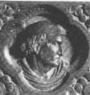

Legend has it that St. Fin Barre was the son of Amergin, whose tribe was descended from Eochaidh Muidmheadoin, brother of the king of Munster. Amergin settled in the territory of Muskerry, in the county of Cork, where he obtained an inheritance and land at a place called Achaidh Durbchon, near the spot afterwards known as Gougane Barra, at the sources of the river Lee.
|  | He was chief smith to Tighernach, king of the Hy Eachach of Munster, and he married a young woman of the king's household. As this was in defiance of the king's wishes, the couple was summoned before him and he sentenced them to be burned alive. A storm of thunder and lightning, with heavy rain, prevented the decree from being carried out. This was regarded as a divine interposition and they were set free. A child was born from this union and they returned to Gougane Barra, where the boy was baptised Luan, or Lochan. When he was seven years old three clerics of Munster, returning from a pilgrimage to Leinster, happened to stop at the house of Amergin. |